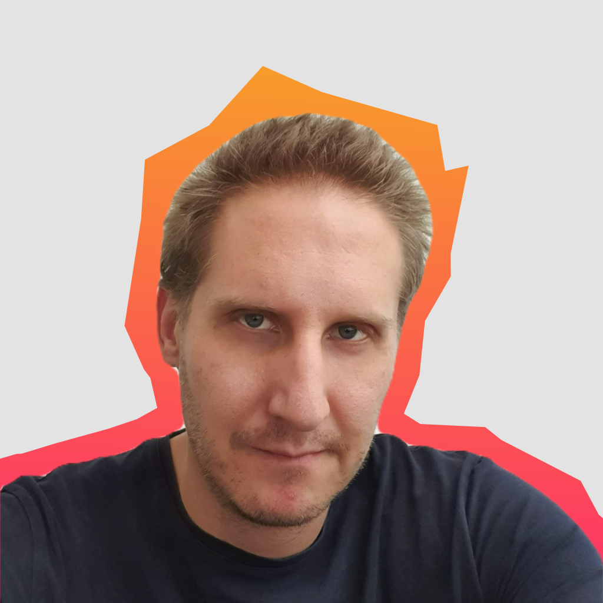
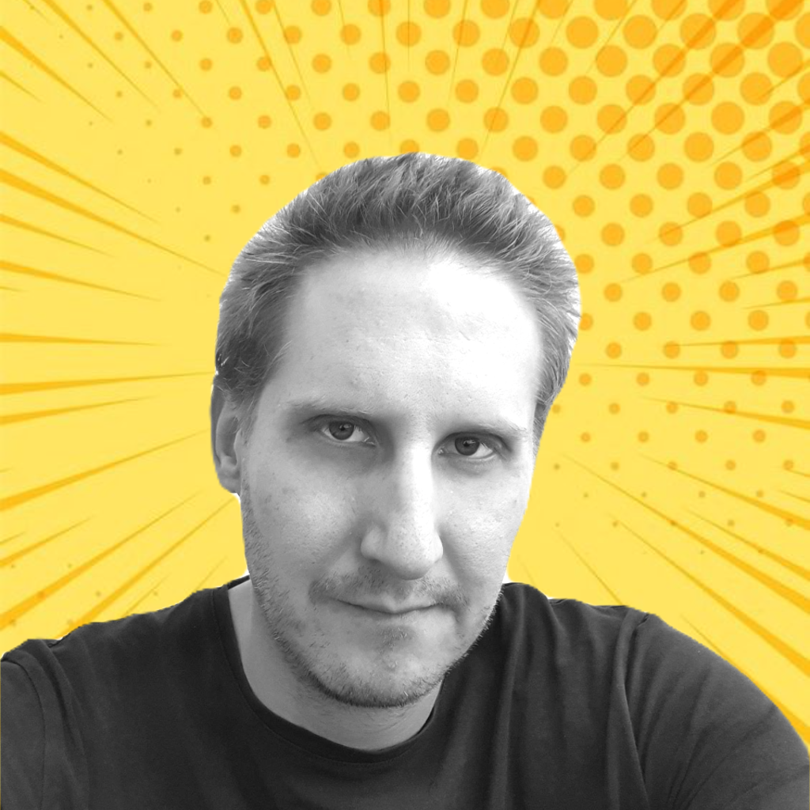
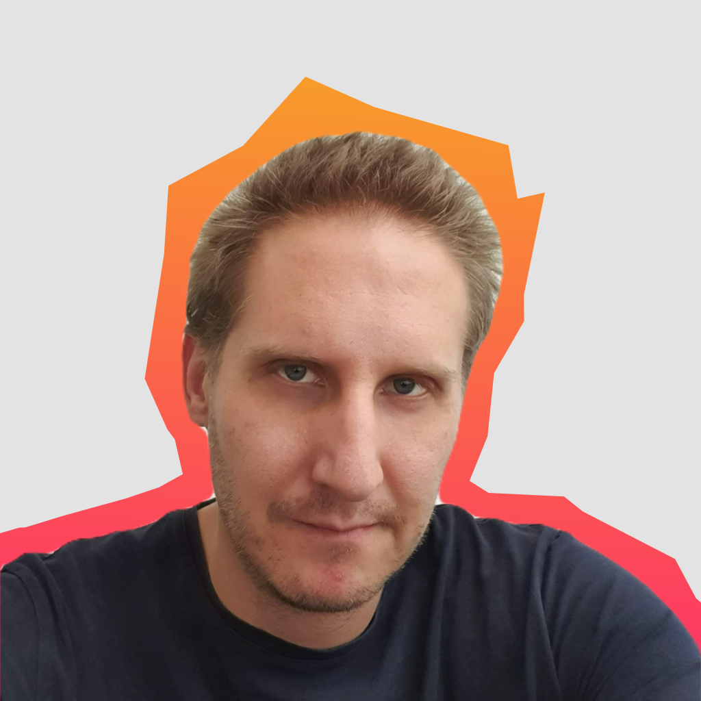
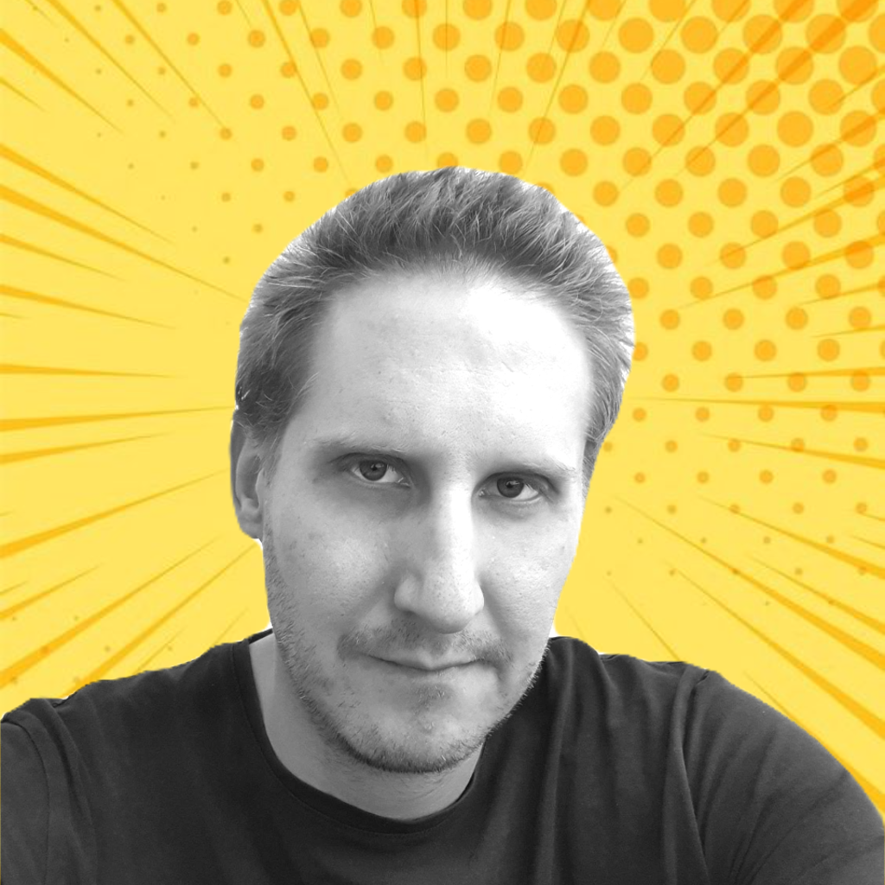

Dado Lendo
 



Summary
Hi there! I'm Dado Lendo, an MBA in Architecture who is passionate about all things design,
but my true love lies in web design.
- I'm known for being hardworking, passionate, reliable, and dedicated to my craft.
- With experience in façade design and a keen eye for aesthetics, I bring a wealth of expertise to the table.
- Transforming abstract concepts into captivating digital experiences is where I thrive,
constantly pushing boundaries to create innovative solutions
- Driven by a commitment to excellence and take pride in crafting visually stunning and user-friendly designs.
Education
- MBA in Architecture - University of Sarajevo (1998-2003)
Work Experience
On-site engineer (civil construction site) - Unigradnja d.d.
2006-2007
Facade Designer/Project Manager - HANO d.o.o.
2007-2023
Facade Designer/Project Manager - Globalone d.o.o.
2023 - present
Here are my skills
Project Managment
I possess strong project management abilities,
ensuring seamless execution and successful completion of design projects.
Facade Design
With expertise in facade design, including creating detailed shop drawings and 3D modeling,
I can bring your architectural visions to life with precision and accuracy.
Web Design
Crafting visually appealing and user-friendly digital experiences.
I have a keen eye for aesthetics and a deep understanding of UX/UI principles.
Comunication
Excellent communication skills allows me to effectively collaborate with clients,
stakeholders, and project teams. I can convey ideas, listen attentively,
and ensure everyone is on the same page.
Creativity
With a strong creative mindset and love to think outside the box.
I can bring fresh ideas and innovative solutions to design challenges, making your projects stand out.
Technical Proficiency
Proficiency in various design software and tools,
including AutoCAD, Revit, SketchUp, Adobe Creative Suite (Photoshop, Illustrator),
and web development frameworks (HTML, CSS, JavaScript).
Attention to Detail
I pay meticulous attention to detail, ensuring accuracy and precision in all aspects of my work.
From design concepts to final deliverables, I strive for perfection.
Time Managment
Skilled at managing my time effectively and meeting project deadlines.
I can handle multiple tasks simultaneously while maintaining quality and efficiency.
Problem-solving
Resourceful problem solver, adept at finding solutions and overcoming design challenges.
I can think critically and adapt quickly to changing project requirements.
Collaboration
Thriving in collaborative environments and enjoy working as part of a team.
I can effectively contribute to group dynamics, share ideas, and work collectively towards project success.
These skills combine to make me a well-rounded and versatile design professional,
ready to take on diverse challenges in project management, facade and web design.
Other
My Hobbies
Other